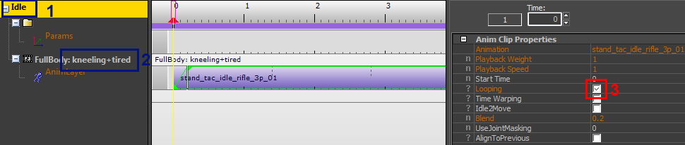
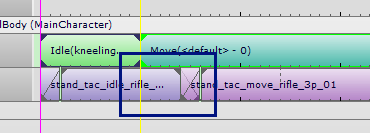
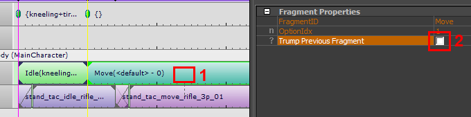
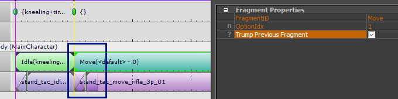

Трампинг
Существует определенное осложнение, которого мы до сих пор тщательно избегали. Когда игра запрашивает FragmentIDs, не гарантируется, что новый фрагмент запустится немедленно. Возможно, что переход по умолчанию между предыдущим фрагментом и новым фрагментом задержит выбор фрагмента. Например, чтобы закончить анимацию или подождать, пока правильная нога не окажется на земле. В каких-то случаях это нормально, в других случаях очень хочется сразу воспроизвести новый фрагмент. И это то, что мы называем Трампинг: по сути просто пропускаем период ожидания.
Это также можно смоделировать в средстве предварительного просмотра. Давайте создадим небольшой сценарий, в котором это происходит.
Откройте фрагмент Idle (на коленях+усталость) в редакторе фрагментов.
- На всякий случай: дважды проверьте fragmentID...
- ...и убедитесь, что выбран правильный вариант: «Стоя на коленях+уставший».
- Выберите первый анимационный клип и снимите флажок с параметра «Зацикливание».

Теперь вернитесь в программу предварительного просмотра и посмотрите на простую последовательность (если вы потеряли последовательность, просто перетащите фрагменты «Idle (Kneeling+Tired)» и «Moving» в программу предварительного просмотра снова, как и раньше.
Возможно, вам придется немного переместить клавишу «Перемещение» FragmentID, чтобы получить именно то, что показано на снимке экрана ниже, но вы должны заметить, что теперь анимация перемещения задерживается!

Это означает, что новая анимация начинается только после завершения предыдущей. Это поведение по умолчанию для фрагментов без цикла. До сих пор мы не устанавливали последовательности с нециклическими фрагментами, поэтому они просто еще не отображались.
Это также означает, что это поведение по умолчанию в игре. Всякий раз, когда игра хочет пропустить этот период ожидания, она настраивает ситуацию так, чтобы «козырить». Мы можем смоделировать это следующим образом:
- Выбор клавиши «Переместить» fragmentID.
- Проверка опции «Козырный предыдущий фрагмент».

Результат следующий: анимация запускается сразу:
